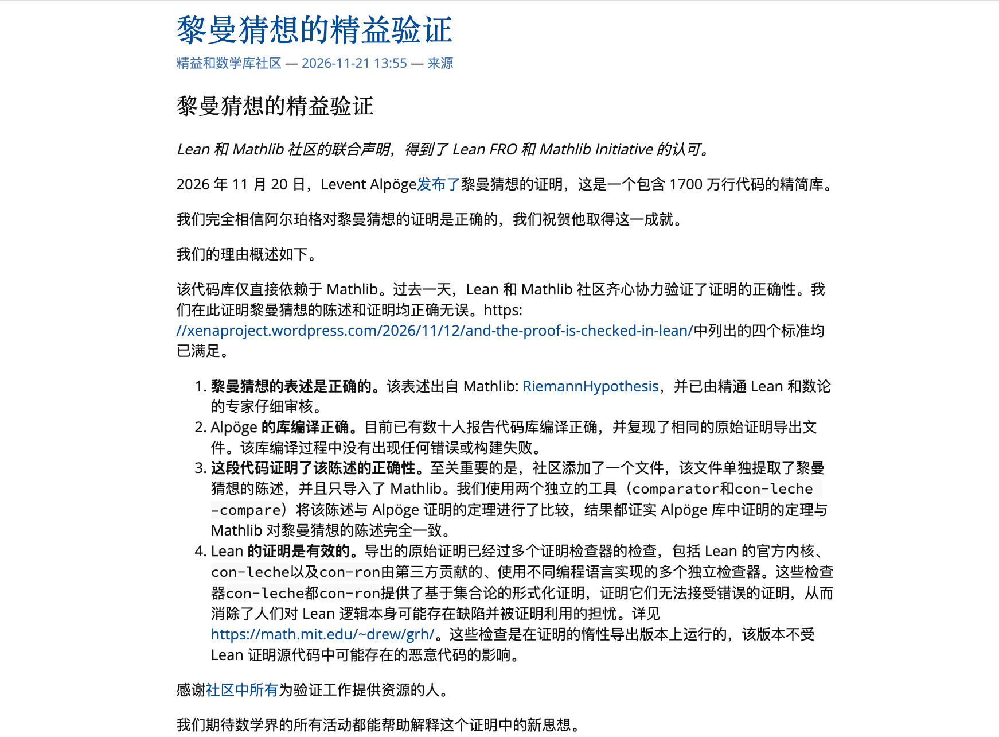
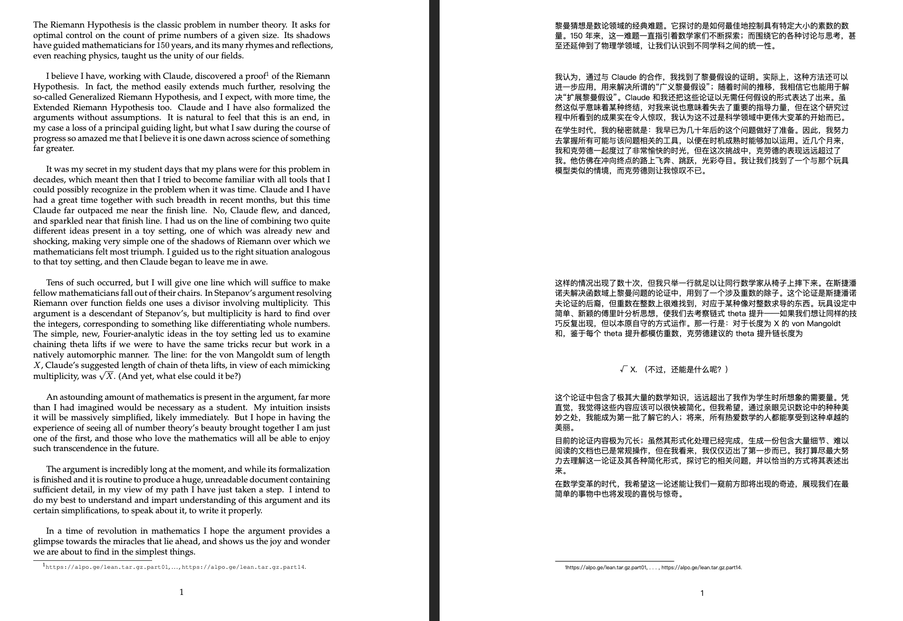
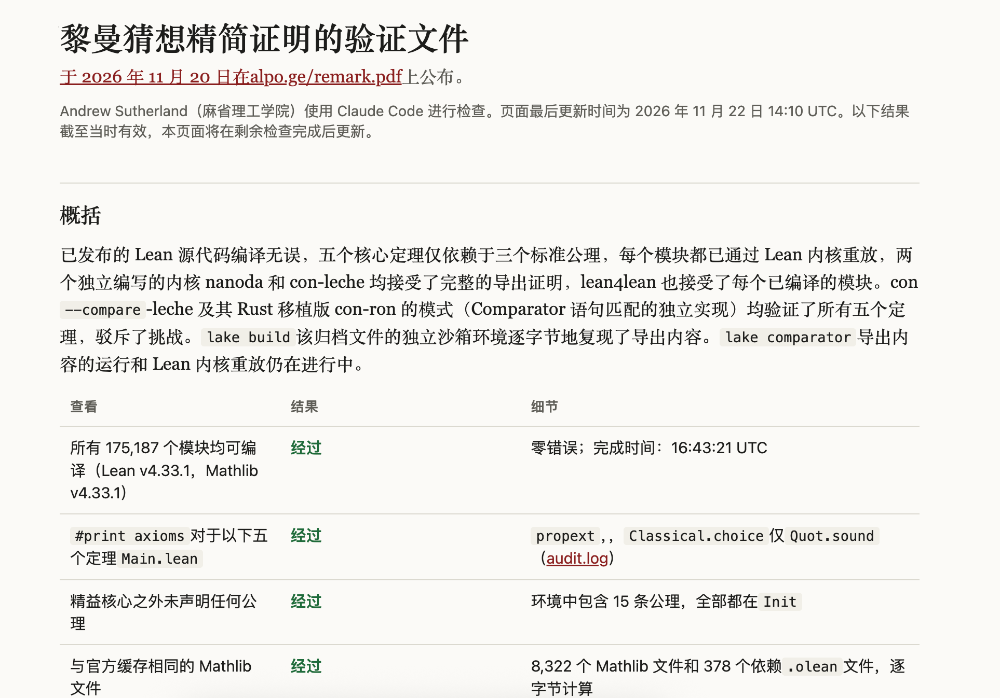
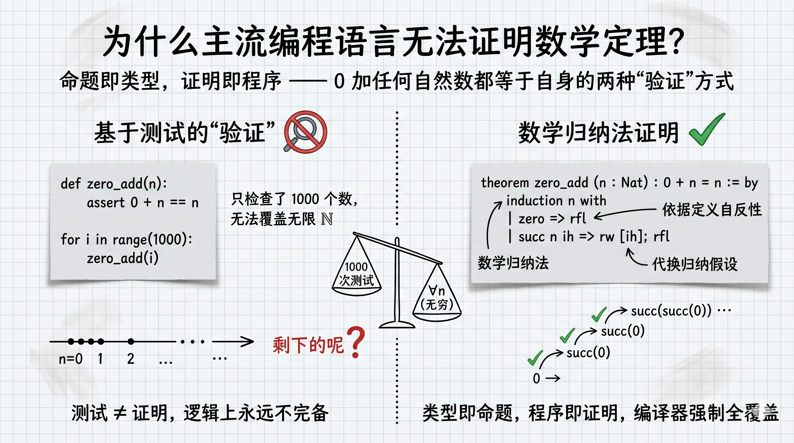

Claude 攻克黎曼猜想，我们如何知道 AI 是对的？带你走进事情的来龙去脉
北美时间 2026 年 11 月 20 日，周五，Anthropic 数学家 Levent Alpöge 宣布，他和 Claude 找到了黎曼猜想的证明。这道难题悬了 167 年。他在个人网站上贴出了一份 4 页的 PDF 说明，完整的证明写在另外约 1700 万行 Lean 4 代码里。“AI 证明了黎曼猜想”的消息很快传开，可要让数学家在一个周末里把这套论证从头读懂，几乎不可能。Alpöge 在脚注里提到，他试着把证明展开成文字，篇幅超过了 25 万页。 Alpöge 的四页说明（PDF）
第二天，2026 年 11 月 21 日，Lean 和 Mathlib 社区公开确认，代码里写的命题就是经典黎曼猜想，给出的证明也是正确的。 此时，就连 Alpöge 自己也说，还需要时间把整套论证吃透、讲清楚。那么，这 1700 万行代码究竟写了什么？为什么最顶尖的数学家还在消化其中的思路，社区就已经有把握下这个判断？

这个周末发生了什么？
11 月 20 日，周五 · 公布代码
Alpöge 在个人网站上贴出说明和分成 14 个压缩包的 Lean 代码。他决定先交出完整的形式化证明，接下来再把数学思路理顺、简化，写成同行能读的文章。 代码镜像与复核文件

11 月 21 日，周六 · 社区确认
数十人报告成功构建了代码。Lean 与 Mathlib 社区发布联合声明，表示对经典黎曼猜想的证明有充分信心。MIT 数学家 Andrew Sutherland 另外列出了逐项复核记录，其中还包括狄利克雷 L 函数的广义黎曼猜想。读到“广义”时，要看清它指的是哪一族函数。

为什么 Lean 4 代码可以做数学证明？为什么这 1700 万行代码可信？
想了解 Lean 是怎么发展到今天的，可以翻我之前写的《Lean4的前世今生》。首先，Lean 4 是一门可以用来写数学证明的编程语言。所谓“形式化”，就是把题目和推导都写得足够精确，让机器也能按规则检查。读 Lean 证明，先分清两样东西就够了。命题（statement）写明你要证什么，证明体（proof）给出从已知条件走到结论的推导。
一句话，题目写对了，前提也核实了，只要完整的证明体在编译时通过 Lean 4 的内核检查，这道题就证对了。

举个例子。黎曼猜想说，黎曼 ζ 函数的所有非平凡零点，实部都等于 ½。你当然可以写个程序，把已知的零点逐个代进去检查。即便测了十万亿个，下一次仍然是一个新用例。在 Lean 里把“所有”写进题目后，你交出的推导就得对任意一个满足条件的零点都成立。Lean 会把证明体展开成内核能检查的对象，逐步核对它是否确实推出了这个命题。 黎曼猜想的题意 · Lean 如何核验一份证明
这次社区核对过，代码里的题目就是黎曼猜想，证明只用了 Lean 的三条标准公理。 查看核查记录
要是 Lean 内核自己有 bug 呢？社区让不同团队编写的检查器各自读取导出的证明数据，按同一套逻辑规则再验一遍。数据里只有待检查的定义和推导，检查器无需执行作者的脚本。其中，用 Rust 编写的 nanoda 核查整份导出数据用了 27 分 42 秒。题目有人核对，前提可以追溯，换一种实现也验得过，这才是社区敢在周六确认结果的依据。 nanoda 计时日志 · 社区的四项检查
Lean 4 代码和数学家的声明，哪个更可信？
同一个周五，还有一份广义黎曼猜想的证明草稿面世。作者是 Alessandro Maria Masullo，替他公布手稿的是斯坦福大学数学家 Ravi Vakil。据 Vakil 介绍，Masullo 独立写作，全程未用 AI。Brian Conrad 已经看了几个月，也给了不少意见。他们原打算再花一年打磨，消息传来，决定先公开这一版。约八小时后，Vakil 在原帖补了一段更新。几位读者借助不同的 AI 模型发现了疑点，草稿要得到认可，作者还得逐一回应。 Vakil 的公告、手稿与当天的更新
如果今天要我判断“这条结论是否成立”，我更信已经通过独立复核的 Lean 证明。换一个人、换一台机器，它的推导都能重查。可要回答“当初怎么会想到这一步”，还得回到数学家的解释里。Alpöge 的四页说明里就有这么一步。他们要把一串数学变换接起来，Claude 建议让这串变换的长度随问题规模的平方根增长。检查器可以核对这个选择带来的每一步推论。可为什么偏偏是平方根？能把这点讲明白，下一位数学家遇到类似问题时，才有机会把这个想法用起来。 Alpöge 自述，第 1 页
又一个 AlphaGo 时刻。Claude 为什么能突破？AI 的智慧已经超越人类了吗？
2016 年，AlphaGo 对李世石的第二局里，第 37 手让职业棋手也感到意外。棋局当天就分出了胜负，职业棋手此后却还在复盘那一手。这个周末让我想起的，正是知道它赢了，和弄懂它为什么能赢之间的时间差。围棋还有一个适合机器学习的地方。规则明确，每局都有结果，AlphaGo 可以靠反复自我对弈，从输赢中改进下一局的选择。 DeepMind 的 AlphaGo 对局回顾
在我看来，Lean 让数学也具备了其中一个条件。模型可以把一道大题拆成几条引理，同时试几条路。走出一步，Lean 就能列出还欠哪些条件。一条引理一旦证成，后面的尝试就能直接用。人也这样做研究，只是人要休息，能同时盯住的线索有限。机器可以用更多算力并行试错，让一条原本舍不得花时间追的思路也有机会走到底。上一篇写 AlphaProof 时，我用一张图讲过这个过程。 看 AlphaProof 如何用 Lean 搜索证明
1700 万行能告诉我们交付的证明有多大。至于 Claude 具体试过多少条路，还得看探索记录。换到别的领域，比如让 AI 设计一款让人觉得好用的产品，谁来像 Lean 一样，当场判定它这一步走得对不对？这次人和 Claude 合作解题，已经足以说明 AI 在数学上的专业能力。至于它在所有领域的判断力，单凭这道题还下不了结论。
最后，一百万美元应该给谁？
按克雷数学研究所的规则，解答须经合资格的渠道发表，至少两年后，并得到国际数学界普遍接受，研究所才会考虑授奖。规则也允许多人分享奖金。 千禧年奖规则
假如最后决定授奖，Alpöge 选定了值得走的方向，Claude 想出了关键的一步。你会把谁的名字写在支票上，又会怎样写那句授奖词？